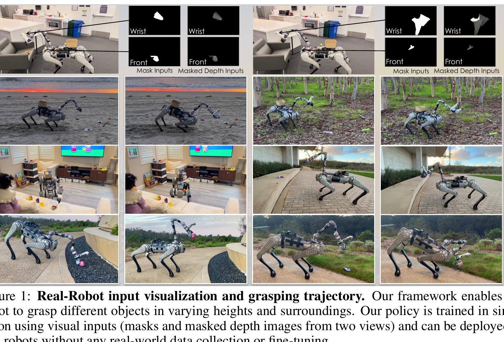
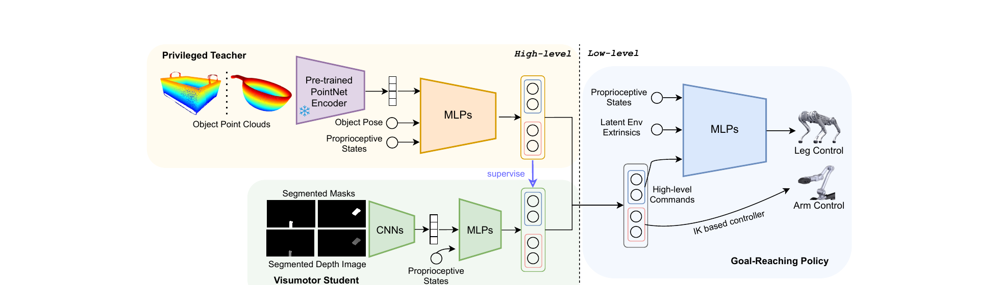
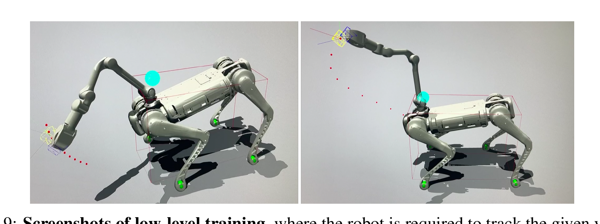
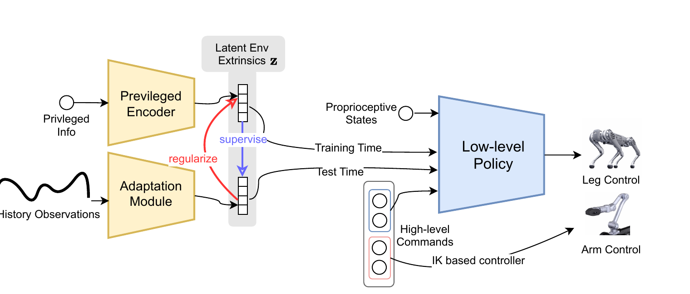
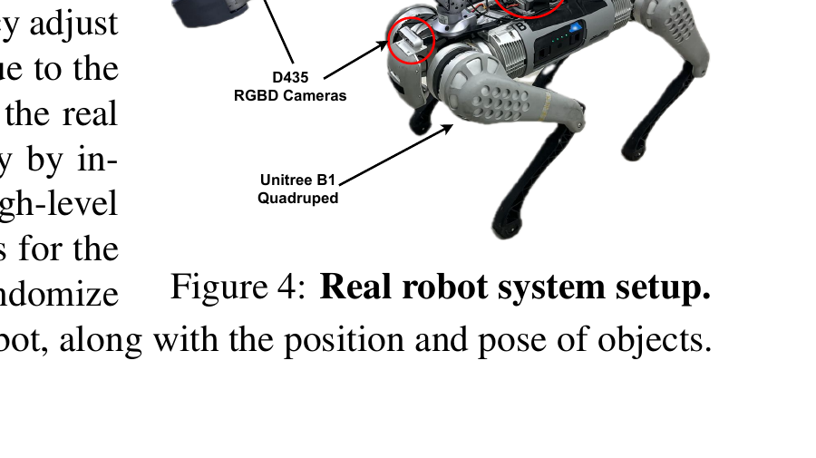
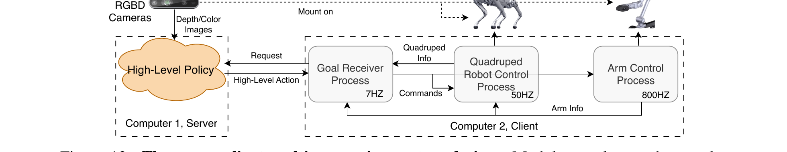

问题与核心思想：让"腿"也参与抓取
一只装了机械臂的四足狗，要去野外捡地上的垃圾。问题来了：机械臂太短，单靠手臂根本够不到地面。人类怎么做？我们会弯下腰、屈膝去够低处的东西——也就是说，腿不只是用来走路，还能扩大手臂的工作空间。VBC（Visual Whole-Body Control）的核心思想就是：把四条腿（12 DoF）、机械臂（6 DoF）、夹爪（1 DoF）共 19 个自由度当成一个整体来协调控制，并且全程只靠机器人自己的相机自主完成，不需要人遥操、不需要采集任何真机数据。
这是一个移动操作（loco-manipulation）问题：既要移动（locomotion），又要操作（manipulation）。过去腿足机器人的视觉学习多用于走路（避障、爬楼梯、跳跃），而 loco-manipulation 需要更精细的控制，直接端到端学习几乎不可行——动作空间太大、信号太稀疏。VBC 的回答是一套分层 + 师生蒸馏 + Sim2Real 的三阶段训练流程。

① 低层通用全身策略（universal low-level policy）：用 RL 训练一个能跟踪『任意末端执行器位姿 + 机身速度』的全身控制器，会自动弯腰屈膝。
② 高层特权教师策略（privileged teacher）：用 RL 训练一个能拿到物体真实位姿/形状的『上帝视角』规划器，给低层下指令完成抓取。
③ 视觉学生策略蒸馏（visuomotor student）：用在线模仿学习（DAgger）把教师蒸馏成只看深度图的视觉策略，全程仿真训练后零样本 Sim2Real。
展开原文 · 为什么需要全身协调
"Our robot can go to the side of the road and pick up the trash on the grass. This will be unachievable without coordinating the legs of the robot, as the arm alone can hardly reach the ground."
两层框架总览：高层动嘴、低层动手
上一节说『直接端到端学不动』。那怎么拆？VBC 把问题拆成两层：低层策略 (low-level) 是个『熟练的身体』——你告诉它『把手移到这个 3D 位姿、机身按这个速度走』，它就调动 19 个关节去实现，且对地形鲁棒；高层策略 (high-level) 是个『任务大脑』——它看着深度相机，决定『现在该往哪走、夹爪该移到哪、该不该合拢』。低层是任务无关的通用底座，高层才是任务相关的。这一节先看整张架构图，后两节分别拆解低层和高层怎么训。
下图是 VBC 的完整训练框架（Fig 3）。蓝色部分是低层目标到达策略（Goal-Reaching Policy），橙色部分是高层特权教师（Privileged Teacher），绿色部分是高层视觉学生（Visuomotor Student）。注意：高层有『教师』和『学生』两个版本——教师用上帝视角的物体位姿/点云训练，学生只用分割掩码+深度图，靠蒸馏继承教师的能力。

阶段一：先练好『身体』（蓝色，低层）
独立用 RL 训练低层策略：随机采样各种末端位姿目标 + 机身速度命令，让它学会用全身（含弯腰）去跟踪。训完后冻结，作为后续所有任务的通用底座。
阶段二：练『上帝视角的大脑』（橙色，教师）
固定低层，用 RL 训练高层教师。教师能直接读到物体真实位姿 s^obj 和点云形状 z^shape，学会下达正确的末端目标和机身速度去完成抓取。
阶段三：把大脑『蒸馏』给眼睛（supervise）
教师看不见的东西（真实位姿）真机里没有。于是用 DAgger 在线模仿，把教师的决策蒸馏进只看深度图的学生策略。
推理输入：只剩掩码 + 深度
部署时学生只吃两路相机的分割掩码和掩码深度（背景全黑）。TrackingSAM 负责实时分割物体——这是 sim2real gap 小的关键。
推理输出：高层指令 → 低层 + IK
学生每步输出高层指令：机身速度增量喂给低层 MLP 控腿；末端位姿目标喂给 IK 控制器控臂。两者协同完成全身抓取。
低层全身策略：用 RL 学一个会弯腰的身体
上一节说低层是『通用身体』，但它具体怎么训？这一节给出完整的 RL 配方。直觉：我们随机往空间里扔一个『手该去的目标位姿』和『机身该走的速度』，让策略用 19 个自由度去同时满足——为了够到低处目标，它会自发学会弯腰屈膝。下面把命令、观测、动作、奖励、IK、目标采样、ROA 域适应逐个讲清，每个公式都拆开解读。
3.1 命令、观测、动作（策略的输入输出）
低层策略 $\pi_{\text{low}}$ 的命令（由高层或随机采样给出）定义为：
- $\mathbf{p}^{\text{cmd}} \in \mathbb{R}^3$
- 末端执行器（夹爪）的目标位置，定义在一个『高度不变』的机器人坐标系下（见下方目标采样）。
- $\mathbf{o}^{\text{cmd}} \in \mathbb{R}^3$
- 末端执行器的目标朝向，用欧拉角表示。
- $v^{\text{cmd}}_{\text{lin}} \in \mathbb{R}$
- 机身前向线速度命令（x 轴）。训练时从 $[-0.6, 0.6]\,\text{m/s}$ 均匀采样。
- $\omega^{\text{cmd}}_{\text{yaw}} \in \mathbb{R}$
- 机身偏航角速度命令。训练时从 $[-1.0, 1.0]\,\text{rad/s}$ 均匀采样。
观测是一个 90 维向量，把机器人当前状态、历史动作、环境隐向量、步态时序、命令全拼在一起：
- $\mathbf{s}^{\text{base}}_t \in \mathbb{R}^5$
- 机身状态：roll、pitch、yaw 角速度（姿态信息，注意不含绝对高度——高度不变坐标系的体现）。
- $\mathbf{s}^{\text{arm}}_t \in \mathbb{R}^{12}$
- 手臂状态：每个臂关节（除末端）的位置与速度。
- $\mathbf{s}^{\text{leg}}_t \in \mathbb{R}^{28}$
- 腿状态：每个腿关节的位置、速度，以及足端接触模式。
- $\mathbf{a}_{t-1} \in \mathbb{R}^{12}$
- 上一步策略网络输出（12 条腿关节动作），帮助平滑。
- $\mathbf{z}_t \in \mathbb{R}^{20}$
- 环境外在隐向量（extrinsics），编码摩擦、质量等物理参数。训练时由特权编码器给出，真机由适应模块估计（见 ROA）。
- $\mathbf{t}_t$
- 时序参考变量：由每只脚的相位偏移和步态周期算出，鼓励学到稳定的小跑（trot）步态。
- $\mathbf{b}_t$
- 上面定义的命令向量。
3.2 RL 算法：PPO 目标函数
低层与高层教师都用 近端策略优化（PPO）训练。PPO 的核心是『别让新策略一步迈太大』——用一个被裁剪（clip）的代理目标限制更新幅度：
- $r = \dfrac{\pi(a\mid s)}{\pi_{\text{old}}(a\mid s)}$
- 概率比：新策略与旧策略对同一动作的概率之比。$r>1$ 表示新策略更偏好这个动作。
- $A(s,a)$
- 优势函数：这个动作比平均水平好多少（>0 该鼓励，<0 该抑制）。通常用 GAE 估计。
- $\text{clip}(r, 1-\epsilon, 1+\epsilon)$
- 把概率比裁剪到 $[1-\epsilon, 1+\epsilon]$（典型 $\epsilon=0.2$），防止一次更新偏离旧策略太远。
- $\min(\cdot,\cdot)$
- 取裁剪前后两项的较小值——这是个保守（悲观）下界，保证更新稳定不爆。
- $\theta_\pi$
- 策略网络参数，最大化这个目标即完成一次更新。
PPO 像系了安全绳的攀岩：优势函数 $A$ 告诉你哪条路线更好（往哪爬），clip 是安全绳（一次别窜太远），min 是『宁可慢点也别坠落』的保守原则。
3.3 低层奖励函数（Table 2 全表逐项）
低层奖励由四类组成：命令跟踪（鼓励跟上速度/位姿）、能耗惩罚（鼓励平滑省力）、存活奖励（别摔）、相位奖励（学稳定步态）。其中速度跟踪用一个核函数 $\phi$：
- $x = v^* - v$
- 命令速度与实际速度之差。差越小越好。
- $\exp(-\lVert x\rVert^2 / 0.25)$
- 把『误差』变成『0~1 的奖励』：完全跟上（误差 0）得满分 1，误差越大奖励指数衰减。分母 0.25 控制衰减带宽。比直接用 $-\lVert x\rVert^2$ 更平滑、梯度更友好。
完整奖励项与权重（Table 2，$\mathbf{q}^*$ 为目标腿关节角，符号已并入权重列）：
| 奖励项 | 定义 | 权重 |
|---|---|---|
| Linear vel tracking | $\phi(v^*_{b,xy}-v_{b,xy})$ | 1.0 |
| Yaw vel tracking | $\phi(v^*_{\text{yaw}}-\omega_b)$ | 0.5 |
| Angular vel penalty | $-\lVert\omega_{b,xy}\rVert^2$ | 0.05 |
| Joint torques | $-\lVert\tau\rVert^2$ | 2e-5 |
| Action rate | $-\lVert\ddot{\mathbf{q}}^*\rVert^2$ | 0.25 |
| Collisions | $-n_{\text{collision}}$ | 0.001 |
| Feet air time | $\sum_{f=1}^{4}(t_{\text{air},f}-0.5)$ | 2.0 |
| Default joint pos error | $\exp(-0.05\lVert\mathbf{q}-\mathbf{q}_{\text{default}}\rVert)$ | 1.0 |
| Linear velocity z | $\lVert v_{b,z}\rVert^2$ | −1.5 |
| Base height | $\lVert h_b-h_{b,\text{target}}\rVert$ | −5.0 |
| Swing phase tracking (force) | $\sum_{\text{foot}}\{1-\exp(-\lVert(\mathbf{f}^{\text{foot}})^2/\sigma_{cf}\rVert)\}$ | −0.2 |
| Stance phase tracking (vel) | $\sum_{\text{foot}}\{1-\exp(-\lVert(\mathbf{v}^{\text{foot}})^2/\sigma_{cv}\rVert)\}$ | −0.2 |
- Feet air time（权重最大之一 2.0）
- 鼓励每只脚有合理的腾空时间（>0.5s），避免碎步拖地，学出干净的小跑步态。
- Swing/Stance phase tracking（相位力/速度）
- $C^{\text{cmd}}_{\text{foot}}(\theta^{\text{cmd}},t)$ 算出每只脚『此刻该腾空还是该触地』。摆动相要求足端力小（不该踩地却踩了就罚），支撑相要求足端速度小（该踩稳却在滑就罚）。这对学稳定步态至关重要。
- Base height（−5.0，惩罚最重）
- 机身高度偏离目标会被重罚——但目标高度是可变的，这正是『弯腰』的开关：高层/采样要求够低处时目标高度降低，机器人才会蹲下。
3.4 手臂为什么用 IK 而非直接预测关节角
先前工作 DeepWBC 直接让 RL 输出手臂关节角，结果末端位姿精度很差。VBC 改为：策略只预测末端 6-DoF 位姿目标，再用伪逆雅可比 IK 解成关节角增量：
- $\Delta\theta \in \mathbb{R}^6$
- 当前关节角需要的增量，加到当前关节位置即得目标关节角。
- $\mathbf{e} \in \mathbb{R}^6$
- 末端位姿误差：当前末端位姿与目标末端位姿（位置+欧拉角）之差。
- $J$
- 雅可比矩阵：关节角速度到末端速度的线性映射 $\dot{x}=J\dot\theta$。
- $J^{T}(JJ^{T})^{-1}$
- $J$ 的右伪逆（Moore-Penrose）。把末端的期望位移『反解』回最小范数的关节位移。
站立时位置误差：直接预测关节角 0.236m → IK 0.047m；行走时 0.414m → IK 0.029m。朝向误差也大幅下降。IK 让末端控制精度提升约 5–14 倍，这是高层能完成精细抓取的前提。
3.5 末端目标采样（让训练覆盖整个工作空间）
要训出鲁棒的全身控制器，必须采样各种各样的末端目标并平滑跟踪。目标在球坐标 $(l,p,y)$ 下采样，再在当前末端位置 $\mathbf{p}$ 与采样目标 $\mathbf{p}^{\text{end}}$ 之间做线性插值，得到每一步的平滑命令：
- $(l,p,y)$ 采样范围
- $l\in[0.4,0.95]$（半径/伸展），$p\in[-\pi/2.5,\,\pi/3]$（俯仰），$y\in[-1.2,1.2]$（偏航）。覆盖手臂前方一大片可达空间。
- $T_{\text{traj}}$
- 一段插值轨迹的时长。到时间或目标会引起自碰撞/触地时重新采样新目标。
- 插值本身
- 把『瞬间跳到目标』变成『平滑地从当前位置走到目标』，避免命令突变让 RL 学崩。坐标系是高度-roll-pitch 不变的，目标只受机身水平移动和偏航影响，保证采样轨迹始终在一个局部球面内、彼此一致。

3.6 ROA 域适应：让 sim 学到的东西能上真机
策略观测里有个环境隐向量 $\mathbf{z}$（编码摩擦、质量等），仿真里能从特权信息直接编码，真机里拿不到。VBC 用正则化在线适应（ROA）解决：训一个『适应模块』只用历史观测来估计 $\mathbf{z}$。损失函数：
- $z^\mu$
- 特权编码器 $\mu$ 的输出：用真实物理参数 $e$（摩擦、质量…）编码出的隐向量。是『正确答案』。
- $z^\phi$
- 适应模块 $\phi$ 的输出：只用历史观测估计的隐向量。真机部署时用它代替 $z^\mu$。
- $-L^{\text{PPO}}(\theta_{\pi^{\text{low}}},\theta_\mu)$
- RL 项：联合优化策略和特权编码器（最大化 PPO 目标，故取负号做最小化）。
- $\lambda\lVert z^\mu - \text{sg}[z^\phi]\rVert_2$
- 正则项：把特权编码器 $z^\mu$ 往适应模块 $z^\phi$ 拉近（让『正确答案』也别太离谱、可被历史估出）。$\lambda$ 是拉格朗日乘子。
- $\lVert \text{sg}[z^\mu] - z^\phi\rVert_2$
- 模仿项：让适应模块 $z^\phi$ 去逼近特权编码器 $z^\mu$。
- $\text{sg}[\cdot]$
- 梯度停止（stop-gradient）算子：被它包住的量只当常数，不回传梯度。保证两个方向各自单向对齐。
- $\lambda=0$ 时
- 退化为 RMA（先训特权策略，再单独监督适应模块）。ROA 是 RMA 的推广。论文中适应模块在 $\pi^{\text{low}}$ 和 $\mu$ 收敛后才开始训。

高层任务规划：特权教师 + 视觉学生蒸馏
低层会跟踪任意目标了，但『目标该是什么』谁来决定？这就是高层的活。直接用 RL + 视觉训高层非常难（视觉 RL 样本效率低）。VBC 的套路是先易后难：先训一个能作弊（拿到物体真实位姿+点云）的特权教师，再把它蒸馏成只看深度图的视觉学生。这一节讲教师的奖励设计（含全表逐项）和学生的 DAgger 蒸馏公式。
4.1 特权教师：观测与动作
教师拿到一个 1094 维的特权观测，包含物体形状和位姿：
- $\mathbf{z}^{\text{shape}}\in\mathbb{R}^{1024}$
- 物体点云经冻结 PointNet++ 编码的形状特征。训练全程不变。
- $\mathbf{s}^{\text{obj}}_t\in\mathbb{R}^6$
- 物体在臂基局部坐标系下的位姿。用局部坐标天然编码了『手离物体多远』的信息。
- $\mathbf{s}^{\text{proprio}}_t\in\mathbb{R}^{53}$
- 关节状态：夹爪关节位置 $\mathbf{q}_t\in\mathbb{R}^{19}$、不含夹爪的关节速度 $\dot{\mathbf{q}}_t\in\mathbb{R}^{18}$、末端位姿 $\mathbf{s}^{ee}_t\in\mathbb{R}^6$。
- $\mathbf{v}^{\text{base vel}}_t\in\mathbb{R}^3$、$\mathbf{a}_{t-1}\in\mathbb{R}^9$
- 机身速度，以及上一次高层动作。
高层动作 $\mathbf{a}_t\in\mathbb{R}^9$：末端位置增量 $\mathbf{p}^{\text{cmd}}_t\in\mathbb{R}^6$、机身线/偏航速度 $\mathbf{v}^{\text{cmd}}_t\in\mathbb{R}^2$、夹爪状态 $p^{\text{gripper}}_t\in\{0,1\}$（开/合）。这正好是低层需要的命令接口。
4.2 高层奖励（Table 3 全表逐项）
高层奖励分两类：阶段奖励（把抓取拆成接近→进展→完成三阶段，同一时刻只处于一个阶段）和辅助奖励（加速收敛、平滑动作、对准物体）。先看三个阶段奖励的定义：
- $r_{\text{approach}}$（接近阶段）
- $d$ 是夹爪到目标的当前最小距离，$d_{\text{closest}}$ 是历史最近距离。只有比『历史最近』更近才有奖励——鼓励单调靠近物体。
- $r^{\text{pickup}}_{\text{progress}}$（进展阶段）
- $d$ 是物体当前最大高度，$d_{\text{highest}}$ 是历史最高。把物体抬得比以前更高才有奖励——鼓励把物体往上拎。
- $r_{\text{completion}}$（完成阶段）
- 指示函数：任务完成（物体高度超过阈值）给一次性大奖励。
- 关键设计
- 三阶段互斥，同一时刻只领其中一个阶段的奖励，避免不同阶段奖励互相干扰。
完整权重表（Table 3）：
| 类别 | 奖励项 / 定义 | 权重 |
|---|---|---|
| Stage | $r_{\text{approach}}$ 接近 | 0.5 |
| Stage | $r_{\text{progress}}$ 进展 | 1.0 |
| Stage | $r_{\text{completion}}$ 完成 | 3.5 |
| Assist | $r_{\text{acc}}=1-\exp(-\lVert\dot{\mathbf{q}}_{t-1}-\dot{\mathbf{q}}_t\rVert)$ | −0.001 |
| Assist | $r_{\text{cmd}}=-\lVert v^*_x + 0.25\exp(-\lVert v^*_x\rVert)\rVert$ | 1.0 |
| Assist | $r_{\text{action}}=1-\exp(-\lVert\mathbf{a}_{t-1}-\mathbf{a}_t\rVert)$ | −0.001 |
| Assist | $r_{\text{ee orn}}=\cos(\mathbf{d}_{\text{obj}}\cdot\mathbf{d}_{\text{ee}})$ | 0.01 |
| Assist | $r_{\text{base orn}}=|\cos(\mathbf{d}_{\text{obj}},\mathbf{d}_{\text{base}})|$ | 0.25 |
| Assist | $r_{\text{base approach}}=1+\tanh(-10\lVert x_{\text{obj}}-x_{\text{base}}-0.6\rVert)$ | 0.01 |
- $r_{\text{acc}}$ / $r_{\text{action}}$（负权重）
- 惩罚臂关节速度的剧变和高层动作的剧变——让动作平滑，便于 sim2real 迁移（真机受不了抖动指令）。
- $r_{\text{cmd}}$
- 鼓励机器人在靠近物体时放慢机身速度（那个 $0.25\exp(-\lVert v^*_x\rVert)$ 项让它别一直全速冲）。
- $r_{\text{ee orn}}$ / $r_{\text{base orn}}$
- 让夹爪朝向和机身朝向都对准物体（$\mathbf{d}$ 是机身/末端指向物体的方向）。保证相机一直能看到物体，不丢失跟踪。
- $r_{\text{base approach}}$
- 机器人离物体远时鼓励靠近（在距离 0.6m 附近达到平衡）。
4.3 学生蒸馏：DAgger 在线模仿
教师的『上帝视角』真机没有。于是用 数据聚合（DAgger）把教师蒸馏成视觉学生：学生在自己遇到的状态上行动，但请教师给出『正确动作』作为监督，最小化两者动作差距：
- $\hat\pi$
- 要学的学生策略（视觉策略）。
- $s\sim d_\pi$
- 状态从学生自己的状态分布 $d_\pi$ 采样——这是 DAgger 的关键：不是在教师轨迹上学，而是在学生会真实遇到的状态上学，从而消除『分布漂移』。
- $\ell(s,\pi)$
- 学生动作与教师动作的差距。VBC 里就是 MSE（均方误差）。
- 训练流程
- 先由教师采样初始转移『热启动』学生 → 再用学生采样、向教师请求纠正动作 → 反复聚合。比直接对视觉策略做 RL 更高效有效。
学生观测 $\mathbf{o}_t=[\mathbf{o}^{\text{image}}_t,\mathbf{s}^{\text{proprio}}_t,\mathbf{a}_{t-1}]$。其中 $\mathbf{o}^{\text{image}}$ 是物体分割掩码 + 掩码深度图（不是 RGB！）。用分割深度而非彩色图，是因为彩色图 sim-real gap 巨大。深度图还做了 hole-filling、最小 0.2m 裁剪、归一化，并加 RandomErasing/GaussianBlur/GaussianNoise/RandomRotation 增强。
视觉输入与实机部署：TrackingSAM + 多进程系统
学生要吃『物体分割掩码』，可真机怎么实时分割出目标物？而且高层(视觉，慢)、低层(控腿，50Hz)、手臂(IK，800Hz)频率天差地别，怎么协同？这一节讲两件落地工程：TrackingSAM 负责一次点选、全程跟踪分割；服务器-客户端多进程系统让不同频率的模块异步协作。这部分是论文能真正跑在真狗上的关键，也是你复现真机时最容易踩坑的地方。
5.1 硬件
| 四足 | Unitree B1（12 DoF） |
| 机械臂 | Unitree Z1（6 DoF）+ 夹爪（1 DoF），装在 B1 背上 → 共 19 DoF |
| 相机 | 2× RealSense D435：一个在头部、一个靠近夹爪（腕部） |
| 板载算力 | B1 自带计算机跑低层策略 + 手臂控制；额外 Nvidia Jetson Orin 跑高层视觉策略 |
| 供电 | 全部由 B1 电池供电，完全板载、无外接 PC（untethered） |

5.2 TrackingSAM：一次点选，全程跟踪
系统需要的人工干预极少：每次重置时，用户在一路相机图像上点几下，SAM 生成初始分割掩码，之后用 AOT（AOT-Tiny，基于 MobileNet，~10fps）实时跟踪该物体，并把掩码传播到两路相机。深度图经 hole-filling 和 clipping 预处理。只要物体对至少一个相机可见，掩码就能传到双视角，启动自动抓取。
5.3 异步多进程系统（Fig 12）

| 组件 | 耗时(s) | 阶段/设备 |
|---|---|---|
| SAM 点选分割 | 1.369 | 初始化 · Jetson Orin 64GB |
| AOT 跟踪 | 0.083 | 自主运行 |
| 图像预处理 | 0.031 | 自主运行 |
| 高层模型推理 | 0.003 | 自主运行 |
| 低层模型推理 | 0.011 | Jetson Xavier NX |
高层总延迟（含跟踪+预处理）把高层有效频率限制在 6–8Hz；低层固定 50Hz。
实验结果：涌现的『重试』行为
前面讲完怎么训。这一节回答：到底好不好用？三个看点：① 形状特征对不规则物体帮助多大；② 不同高度（地面/箱子/桌面）下相比 floating-base 基线强多少；③ 一个有意思的涌现行为——抓失败会自己重试。
仿真：抓取成功率（Table 1，7 类物体，>300 episode/类）
| 策略 | Ball | LongBox | Cup | Bowl | Drill |
|---|---|---|---|---|---|
| 教师 Floating Base | 0.63 | 0.20 | 0.71 | 0.55 | 0.07 |
| 教师 w.o. Shape | 0.96 | 0.74 | 0.71 | 0.55 | 0.74 |
| 教师 VBC(完整) | 0.89 | 0.93 | 0.89 | 0.78 | 0.84 |
| 学生 VBC(视觉) | 0.67 | 0.42 | 0.74 | 0.52 | 0.47 |
① 形状特征在规则物体（球）上略降，但在不规则物体（long box/cup/bowl/drill）上大幅提升——没有形状特征时策略只会瞄准物体几何中心抓，对复杂形状失效。② 学生比教师差不少，因为只靠视觉、且首次没抓住后物体姿态可能变得更难抓。③ long box 对学生最难（没形状特征难定位姿态）。
真机：涌现的重试行为（Fig 7）
真机测 14 物体 × 3 高度，每次配置允许连续重试 5 次。关键观察：抓失败时机器人会自动重试，无需人干预——这是仿真训练里（含 10% 概率随机改变物体位姿）涌现出来的行为。重试让平均成功次数随尝试数显著上升。VBC 在所有高度（0m/0.3m/0.5m）都明显超过遥操 floating-base 基线，尤其在 0m 和 0.3m，因为基线机身高度固定、够不到。
① 视觉跟踪丢失：TrackingSAM 受相机抖动/遮挡/相似颜色干扰会丢目标（最常见失败原因）。② 夹爪设计差：Z1 的喙状夹爪不是平行夹爪，容易把物体推开。③ 深度估计不准：D435 对反光物体深度差。④ 复合误差：分层系统每个模块都要够准。⑤ 只用掩码+深度、不用 RGB → 无法做依赖颜色的任务（分垃圾、按绿色按钮）。
复现操作总结：从零到真机的完整路线
这一节是给你（想自己跑一遍 VBC）的实操路线图。注意：截至本笔记，作者只放了项目页 wholebody-b1.github.io 和视频，未必有完整开源代码——所以下面是『按论文配方自己搭』的复现路径，标注每步用到论文哪个公式/超参，以及最容易踩的坑。整体分三阶段训练 + 一阶段部署，全部在仿真里训，真机零数据。
仿真：Isaac Gym（GPU 并行，论文用 legged_gym 风格）。训练机：单张 GTX 4090 / 3090 够用（教师 ~36h、学生 ~48h）。真机（可选）：Unitree B1 + Z1 + 2×RealSense D435 + Jetson Orin。资产：B1+Z1 的 URDF/MJCF；YCB 数据集（33–34 个物体，分 7 类）；点云预训练 PointNet++。
阶段 0：环境与资产准备
搭仿真 + 导入机器人
装 Isaac Gym + legged_gym 框架。把 B1（12 DoF 腿）+ Z1（6 DoF 臂）+ 夹爪拼成 19 DoF 单体 URDF，给腿关节配 PD 控制器、给臂关节配 PD + IK 控制器。导入 YCB 物体并按 7 类（ball / long box / square box / bottle / cup / bowl / drill）组织。
# 关键参数对齐论文
腿: 12 DoF, PD 控制, 输出=目标关节角
臂: 6 DoF, IK 控制 (伪逆雅可比), 800Hz
夹爪: 1 DoF, {0,1} 开/合
低层控制频率: 50Hz 高层: 6-8Hz阶段 1：训练低层通用全身策略（§03）
用 PPO 训『会弯腰的身体』
观测=90 维（§3.1 那个向量）；命令 $\mathbf{b}_t$ 含末端位姿 + 机身线/角速度，线速度采样 $[-0.6,0.6]$、偏航 $[-1.0,1.0]$。末端目标用球坐标 $(l,p,y)\in[0.4,0.95]\times[-\pi/2.5,\pi/3]\times[-1.2,1.2]$ 采样并按插值公式平滑跟踪。奖励用 Table 2 全套（命令跟踪 $\phi$ 核 + feet air time + swing/stance 相位 + base height 惩罚）。动作=12 腿关节目标角；手臂用 IK（$\Delta\theta=J^T(JJ^T)^{-1}\mathbf{e}$）。
# 易踩坑
1) base height 用可变目标（弯腰开关），别写死
2) 手臂必须 IK，别让 RL 直接出臂关节角（精度差5-14x）
3) 高度-roll-pitch 不变坐标系，目标只随水平移动+偏航变
4) 域随机化: 地形/摩擦/质量/CoM/电机强度加 ROA 域适应（为 sim2real 铺路）
先训好策略 $\pi^{\text{low}}$ + 特权编码器 $\mu$（输出 $z^\mu$，20 维）。收敛后再训适应模块 $\phi$（2 层 CNN，只吃历史观测，输出 $z^\phi$），用 Eq.3 双向对齐（$\lambda=0$ 即退化为 RMA）。真机用 $z^\phi$ 顶替 $z^\mu$。网络：低层 3 层 MLP（128, ELU）；特权编码器 2 层 MLP（hidden 64）。
阶段 2：训练高层特权教师（§04）
冻结低层，用 PPO 训『上帝视角大脑』
观测=1094 维特权向量（含 $z^{\text{shape}}$ 1024 维 PointNet 形状特征 + 物体局部位姿 $s^{\text{obj}}$）。动作 $a_t\in\mathbb{R}^9$=末端位置增量 + 机身线/偏航速度 + 夹爪开合。奖励用 Table 3：三阶段（approach 0.5 / progress 1.0 / completion 3.5，互斥）+ 辅助（平滑、朝向对准、靠近）。网络：冻结 PointNet 编码器 + 2 层 MLP。
# 高层训练技巧（论文 Additional training techniques）
1) Action delay: 加 1 步动作延迟模拟真机推理延迟
2) Command clip curriculum: 线速度命令逐渐收紧
3) Reward curriculum: r_cmd 在学会抓取后才加入
4) 10% 概率随机改变物体位姿 → 涌现重试行为
5) Forcing stop: 夹爪闭合时强制机身速度=0 (stop-then-pick)
6) 高层频率随机化 6.25-8.33Hz, 臂 Kp/Kd 随机化
7) 桌面高度 0-0.5m 随机, 物体位姿随机阶段 3：蒸馏视觉学生（§04.3）
DAgger 把教师蒸馏成只看深度的学生
学生观测=分割掩码 + 掩码深度图（两路相机）+ 本体感知 + 上一动作。网络：4 帧堆叠图过 2 层 CNN（kernel 5、3）→ 64 维，拼本体感知 → 2 层 MLP（hidden 64, ELU）。蒸馏用 Eq.2 DAgger（先教师热启动，再学生采样+教师纠正，MSE 对齐）。注意学生只能用 240 个并行环境（视觉渲染显存贵），教师能用 10240 个。深度图做 hole-filling + 最小 0.2m 裁剪 + 归一化 + 数据增强（RandomErasing/Blur/Noise/Rotation），并随机化相机延迟。
阶段 4：真机部署（§05，可选）
搭 TrackingSAM + 多进程系统，零样本上真机
① 部署 TrackingSAM：用户点选物体 → SAM 出初始掩码 → AOT-Tiny 实时跟踪并传播到双相机。② 搭服务器-客户端：Jetson Orin 跑高层(7Hz 请求/6-8Hz 有效) 作 server；B1 板载跑 Goal Receiver(7Hz) + 四足控制(50Hz) + 手臂 IK(800Hz) 作 client，异步通信、用旧命令保持控制。③ 直接加载仿真训好的学生策略，无需任何真机数据或微调。
# 真机最常见失败点（按论文 Appendix I 排查）
- 视觉跟踪丢失 (遮挡/抖动/相似色) ← 最常见
- 反光物体深度估计差
- 喙状夹爪推开物体
- 分层复合误差累积不一定要真机。仿真里跑通『阶段 1 低层 + 阶段 2 教师』，复现 Table 1 教师成功率（VBC 完整 vs w.o. shape），就足以验证『全身协调 + 形状特征』这两个核心贡献。学生蒸馏和真机是迁移工程，可后置。低层是一切的地基，务必先在仿真里确认它能稳定弯腰够到地面目标（对照 Fig 9）。
与 VLA / Embodied AI 的联系
你正在往 VLA 方向转，那 VBC 这套『分层 + 师生蒸馏 + Sim2Real』和 π₀ 那类 VLA 是什么关系？一句话：它们是机器人策略的两种互补范式——VLA 走『大数据 + 大模型 + 真机遥操』，VBC 走『仿真 RL + 特权蒸馏 + 零真机』。理解 VBC 能让你看清『为什么腿足/全身控制目前还没被 VLA 统一吃掉』。
把 VBC 读成『一个用 RL+蒸馏代替大数据的 VLA 下半身』。VLA 解决『看懂任务、出抽象动作』，VBC 解决『把抽象动作变成一只会弯腰的狗的 19 个关节力矩』。两者拼起来，才是能在野外自主干活的具身智能体。
VBC = 分层（任务无关低层 + 任务相关高层）+ 三阶段训练（低层 RL → 特权教师 RL → 视觉学生 DAgger 蒸馏）+ 全身协调（腿参与扩大工作空间）+ 零真机 Sim2Real（分割深度模态 + ROA + TrackingSAM）。让一只装臂的四足狗，自主在室内外不同高度抓取多样物体。